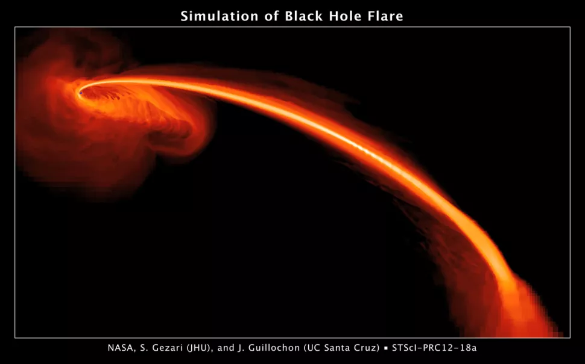

အခု ဖြစ်စဉ်ဟာ ကမ္ဘာကနေ အလင်းနှစ် သန်း ၂၅၀ အကွာမှာ ရှိတဲ့ ဘလက်ဟိုး တွင်းနက် တစ်ခုမှာ ဖြစ်ပွားခဲ့တာ ဖြစ်ပါတယ်။ ဒီ တွင်းနက်ဟာ အခြား ဂလက်ဆီ တစ်ခုရဲ့ ဗဟိုမှာ ရှိတဲ့ ကြီးမားတဲ့ ဧရာမ တွင်းနက်ကြီး တစ်စင်း ဖြစ်ပါတယ်။
အခု လေ့လာ တွေ့ရှိချက်ဟာ တွင်းနက် တခုကနေ ကြယ်တစင်းကို ဝါးမြို စားသုံးလိုက်တဲ့ ဖြစ်စဉ်တွေ အနက် ကမ္ဘာနဲ့ အတော် နီးကပ်တဲ့ ဖြစ်စဉ်တခုကို မှတ်တမ်း တင်နိုင်ခြင်းလဲ ဖြစ်ပါတယ်။
ဒီ တွင်းနက်ကနေ ကံဆိုးသူ ကြယ်ကို အစိတ်စိတ် အမွှာမွှာ ဆုတ်ဖြဲ ပစ်လိုက် ပြီးချိန်မှာ ဒီ တွင်းနက်ရဲ့ ပတ်ခြာလည် ကနေ စွမ်းအား ပြင်းထန်တဲ့ X-Ray ဓါတ်ရောင်ခြည် လှိုင်းတွေ အများအပြား ထွက်ပေါ် လာတာ ကိုလဲ လေ့လာ တွေ့ရှိ ခဲ့ကြပါတယ်။
ဒီ အချက်က ဘာကို ပြနေလဲဆိုတော့ အစိတ်စိတ် ဖြစ်သွားတဲ့ ကြယ်ရဲ့ အပိုင်းအစ တွေကို တွင်းနက်က ဝါးမြို စားသုံး ပစ်လိုက်တဲ့ အချိန်မှာ တွင်းနက်ထဲကို ဝင်သွားတဲ့ ဓါတ်ငွေ့တွေဟာ ဘလက်ဟိုးရဲ့ အပေါ်မှာ အလွန် ပူတဲ့ အကာအရံ တစ်ခု အဖြစ် ပြောင်းလဲ သွားတာကို ညွှန်ပြ နေပါတယ်။
ဒီ အကာအရံ ကို ကိုရိုနာ (Corona) လို့ ခေါ်ပါတယ်။ အလွန် ပူပြင်းတဲ့ ဒီ ကိုရိုနာ အကာ ကနေ X-Ray ရောင်ခြည်လှိုင်းတွေ ထွက်ပေါ် လာပါတယ်။ ဒီလှိုင်းတွေကို နာဆာရဲ့ NuSTAR ဂြိုဟ်တုမှာ တပ်ဆင်ထားတဲ့ လှိုင်းဖမ်း စက်တွေကနေပြီး အသေးစိတ် ဖမ်းယူ နိုင်ခဲ့တယ်လို့ တာဆာရဲ့ ထုတ်ပြန်ချက် အရ သိရပါတယ်။
နာဆာက ပညာရှင် တွေက သူတို့ရဲ့ တွေ့ရှိချက် တွေကို Astrophysical Journal နက္ခတ် သုတေသန ဂျာနယ်မှာ တင်ပြ ထားကြပါတယ်။

သိပ္ပံ ပညာရှင်တွေ လေ့လာ နိုင်ခဲ့ကြတဲ့ တွင်းနက် အများစုရဲ့ ပတ်ခြာလည်မှ အလွန် ပူပြင်းတဲ့ ဓါတ်ငွေ့ ဝဲဂယက်တွေ ရှိကြပါတယ်။ ဒီ ဝဲဂယက် တွေဟာ အလွန် ပူပြင်းတဲ့ ဓါတ်ငွေ့တွေနဲ့ ဖွဲ့စည်းထား ကြပါတယ်။
ဒီ ဝဲဂယက်တွေဟာ အရွယ်အစား အားဖြင့်လဲ အလွန် ကြီးမားကြပြီး အလင်းရောင်လဲအလွန် တောက်ပ ကြပါတယ်။ အချို့သော တွင်းနက်ရဲ့ ဝဲဂယက် တွေဟာ သူ့မိခင် ဂလက်ဆီ တစ်ခုလုံးက ထွက်တဲ့ အလင်းထက်တောင် ပိုပြီး တောက်ပတာကို ပညာရှင်တွေ တွေ့ရှိခဲ့ ကြပါတယ်။
ဒီလို တောက်ပတဲ့ တွင်းနက်တွေ မှာတောင် ဝါးမြိုခံရတဲ့ ကြယ်တွေကို အဝေးကနေ ထင်ထင်ရှားရှား မြင်တွေ့ နိုင်ကြပါတယ်။ ဒီလို ဝါးမြို ခံရတဲ့ ဖြစ်စဉ်ဟာ သိပ်တော့ ကြာမြင့်တာ မဟုတ်ပါဘူး။ အများအားဖြင့် သီတင်ပတ် အနည်းငယ် ကနေ လပိုင်း လောက်ပဲ ကြာမြင့်လေ့ ရှိကြပါတယ်။
ဒီလို လေ့လာဖို့ လွယ်ကူတာနဲ့ ဖြစ်စဉ် တခုလုံးရဲ့ ကြာမြင့်ချိန် တိုတောင်းတာ တွေကြောင့် ဒီလို ဖြစ်စဉ်မျိုးကို အစအဆုံး ပညာရှင်တွေ လေ့လာဖို့ သိပ်ပြီး အခက်အခဲ မရှိ လှပါဘူး။ ဒါ့ကြောင့်လဲ တွင်းနက်က ကြယ်ကို ဝါးမြိုတဲ့ ဖြစ်စဉ်တွေဟာ နက္ခတ် ပညာရှင်တွေ မလွတ်တမ်း လေ့လာလို ကြတဲ့ ဖြစ်စဉ်တွေ ဖြစ်ပါတယ်။
“ဒီလို ဖြစ်စဉ်တွေကို လေ့လာရတာ ဂလက်ဆီ တွေရဲ့ အလယ်ဗဟိုက တွင်းနက်တွေ အစာစား တာကို real time live show ကြည့်ရ သလိုပါပဲ” လို့ အမေရိကန် ပြည်ထောင်စု ဘော်လ်တီးမိုး မြို့က Space Telescope Science Institute မှာ တာဝန် ထမ်းဆောင် နေတဲ့ နက္ခတ် ပညာရှင် ဆူဝီ ဂီဇာရီ (Suvi Gezari) က ပြောပါတယ်။ သူဟာ အခု စာတမ်းကို ပူးတွဲ တင်ပြခဲ့တဲ့ ပညာရှင် တစ်ဦးလည်း ဖြစ်ပါတယ်။
ကြယ်တစင်းဟာ တွင်းနက်နား အရမ်း နီးနီး ကပ်ကပ် ဖြတ်သွားမိတဲ့ အခါမျိုးမှာ တွင်းနက်ရဲ့ ပြင်းထန်တဲ့ ဆွဲငင်အားက ကြယ်ကို ဆွဲဆန့်လိုက် သလို ဖြစ်သွားပါတယ်။ ဘာနဲ့ တူလဲ ဆိုတော့ ချော်ရည်ပူတွေ စီးဆင်းနေတဲ့ မြစ်ကြီး တစ်စင်းလိုပေါ့။ ပူပြင်းတဲ့ ဓါတ်ငွေ့တွေဟာ မြစ်ကြီး တစ်စင်းလို တွင်းနက်ထဲ စီးဝင် သွားပါတယ်။ ဒီလို ဝင်သွားတဲ့ အခါ တွင်းနက်နား နီးလာတဲ့ အခါမှာ တွင်းနက်ကို ပတ်ပြီး တစ်ဖြည်းဖြည်း တွင်းထဲ ကျဆင်း သွားပါတယ်။
အခု ဖြစ်စဉ်ကို AT2021ehb လို့ အမည် ပေးထားပါတယ်။ ဒီ တွင်းနက်ကြီးဟာ ကျွန်တောတို့ နေရဲ့ ဒြပ်ထုရဲ့ အဆ ၁၀ သန်းလောက် ရှိတဲ့ ဒြပ်ထုနဲ့ ဖွဲ့စည်းထားတဲ့ တွင်းနက်ကြီး တစ်ခု ဖြစ်ပါတယ်။ ဒီ တွင်းနက်ရဲ့ ပြင်းထန်တဲ့ ဆွဲအားက ကြယ်ရဲ့ တွင်းနက်နဲ့ နီးတဲ့ အပိုင်းကို ပိုပြီး သက်ရောက်တာမို့ ဒီကြယ်ဟာ လက်နှစ်ဖက်နဲ့ ဆွဲဆန့်လိုက် သလို ရှည်မြောမြောကြီး ဖြစ်သွားရပါတယ်။ ခေါက်ဆွဲလုပ်ရင် ဆွဲဆန့်လိုက် သလိုမျိုးနဲ့ ခပ်ဆင်ဆင် တူပါတယ်။
ဒီလို တွင်းနက်ထဲစီးဝင်သွားတဲ့ ဓါတ်ငွေ့တွေ တွင်းနက်ထဲ ဝင်မသွားခင် ဘလက်ဟိုးကို လှည့်ပတ်ရင်း အချင်းချင်း တိုက်မိ ကြပါတယ်။ ဒီ တိုက်မိတဲ့ ဖြစ်စဉ်ကြောင့် shock wave တွေ ထွက်ပေါ် လာသလို အလင်းရောင်နဲ့ အခြား မျက်စေ့နဲ့ မမြင်နိုင်တဲ့ ဓါတ်ရောင်ခြည် တွေလဲ အများအပြား ထွက်ပေါ် လာကြပါတယ်။ ဒီ လှိုင်းတွေ ထဲမှာ ခရမ်းလွန် ရောင်ခြည် နဲ့ X-ray လှိုင်းတွေလဲ ပါဝင်ပါတယ်။
အချိန် နဲနဲ ကြာလာတဲ့ အခါမှာ ဒီလို တွင်းနက်ကို လှည့်ပတ်သွားတဲ့ ဓါတ်ငွေ့ ဝဲဂယက်ဟာ တဖြည်းဖြည်း ညီညာ သွားပါတယ်။ ဒီအခါမှာတော့ အချင်းချင်း တိုက်မိတာလဲ နည်းသွားတဲ့ အတွက် စွမ်းအားနိုမ့် X-ray လှိုင်းတွေ အစားထိုး ထွက်ပေါ် လာကြပါတယ်။
အခု ဖြစ်စဉ်မှာ ဒီ အဆင့် ရောက်ဖို့ အချိန် ရက် ၁၀၀ ပဲ ကြာမြင့် ခဲ့ပါတယ်။
အခု ဖြစ်စဉ်ကို ပထမဆုံး ၂၀၂၁ မတ်လ ၁ ရက်နေ့က စတင် ရှာဖွေ တွေ့ရှိ ခဲ့ကြတာ ဖြစ်ပါတယ်။ အဲ့သည့်နောက် နာဆာရဲ့ အခြား လေ့လာရေး ဂြိုဟ်တုတွေ ကနေ ဆက်လက်ပြီး အသေးစိတ် စောင့်ကြည့် မှတ်တမ်းတင် ခဲ့ကြပါတယ်။
စတင် တွေ့ရှိ ချိန်ကနေ ရက်ပေါင်း ၃၀၀ ခန့် အကြာမှာတော့ အပေါ်က တင်ပြခဲ့တဲ့ ကိုရိုနာ ဓါတ်ငွေ့ အကာ ဖြစ်ပေါ်လာတာကို တွေ့ရှိ ခဲ့ကြပါတယ်။ ဒါဟာ ပညာရှင်တွေ မူလ မျှော်လင့်ထားခြင်း မရှိခဲ့တဲ့ ဖြစ်စဉ် တခု ဖြစ်နေတာမို့ တအံ့အဩ ဖြစ်သွားခဲ့ ကြရပါတယ်။
ဒီလို ကိုရိုနာ အကာဟာ တွင်းနက်ကနေ ဓါတ်ငွေ့ စီးကြောင်းကြီး ပန်းထွက်နေတဲ့ အခါမျိုးမှ တွေ့ရလေ့ ရှိတဲ့ ဖြစ်စဉ် တခု ဖြစ်ပါတယ်။ ဒါပေမယ့် အခု ဖြစ်စဉ်မှာတော့ တွင်းနက်က ဘာဓါတ်ငွေ့စီးကြောင်းမှ ထွက်ပေါ်လာခြင်း မရှိတာမို့ အခုလို ကိုရိုနာ အကာ တွေ့ရမယ်လို့ မမျှော်လင့်ခဲ့ ကြတာ ဖြစ်ပါတယ်။
တွင်းနက်ရဲ့ ကိုရိုနာ အကာဟာ အခြား အစိတ်အပိုင်းတွေထက် ပိုပြီး ပြင်းထန်တဲ့ X-ray ဓါတ်ရောင်ခြည် တွေကို ထုတ်ပေးလေ့ ရှိပါတယ်။ ဒါပေမယ့် ဒီ ကိုရိုနာ အကာ ဘယ်လို ဖြစ်ပေါ်လာလဲ ဆိုတာကိုတော့ သိပ္ပံ ပညာရှင်တွေ အခုထိ ရှာဖွေ တွေ့ရှိခြင်း မရှိ သေးပါဘူး။
အခု စာတမ်း တင်ပြတဲ့ နာဆာ ပညာရှင် တွေကတော့ တွင်းနက်ရဲ့ ပတ်ဝန်းကျင်က သံလိုက် စက်ကွင်း (magnetic field) ဟာ ဒီ ကိုရိုနာ ဖြစ်ပေါ်လာမှုမှာ အရေးပါတဲ့ အခန်းကနေ ပါဝင်မယ်လို့ ယူဆ ကြပါတယ်။
Ref: NASA Gets Unusually Close Glimpse of Black Hole Snacking on Star | NASA